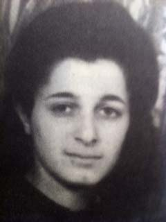

Portrait d’archive
Rosette Wolczak
Rosette WOLCZAK
Rosette WOLCZAK est née le 19/03/1927 à Paris en France.
Rassemblée à Annemasse, elle est déportée à Auschwitz le 20/11/1943 par le convoi n°62. Elle est morte en déportation.
Fille de Zélig et Zlata Welner, tailleurs. Réfugiée à Lyon. Refoulée à la frontière suisse sur Annemasse avant déportation. Sœur de Nathan (né le 15/12/1933 à Paris 4) Déportée seule.
Dernière adresse connue : 57, rue Vauban 69006 (Lyon)
École fréquentée : Ecole Jean Jaurès - Lyon (Lyon) non renseignée
Nom : WOLCZAK
Prénom(s) : Rosette Reizl
Date naissance : 19/03/1928
Âge (ans) : 15
Lieu naissance : Paris
Pays ou département : Seine
Lieu rassemblement : Annemasse
Dernière adresse : 57, rue Vauban
Ville : Lyon
Code postal : 69006
N° Convoi : 62
Date déportation : 20/11/1943
Informations diverses : Rosette est la fille de Zélig et Zlata née Welner, tailleur et la soeur de Nathan WOLCZAK (né le 15/12/1933 à Paris 4). Reizl dite Rosette Wolczak est née le 19 mars 1928 à Paris. Juive d’origine polonaise, elle fuit les persécutions et trouve refuge à Lyon avec sa famille dès 1941, avant de gagner Grenoble au début 1943. Nathan est scolarisé élève à l’École Jean Jaurès (Lyon). A l’automne, avec l’arrivée des Allemands dans la région, Rosette est confiée au Mouvement de la jeunesse sioniste, une branche de la résistance juive. Le réseau, grâce auquel plus de 1100 enfants franchissent la frontière genevoise entre 1942 et 1944, doit l’aider à rejoindre des cousins établis en Suisse. Le 24 septembre 1943, Rosette quitte Annecy en compagnie de cinq garçons, deux filles et deux passeurs. A la borne 50, entre Certoux et Soral, ils se glissent sous les barbelés. Âgée de moins de 16 ans, Rosette est sauvée: en vertu des instructions fédérales, elle doit être accueillie (La Suisse pendant la Seconde Guerre mondiale). Durant les trois semaines de quarantaine qui suivent son arrivée, elle se lie avec un jeune Français. Le 7 octobre, elle est surprise en sa compagnie dans un dortoir et écrouée pour incitation à la débauche. Le 16 octobre, Rosette est refoulée. Trois jours plus tard, elle est arrêtée par les Allemands. Transférée à Drancy, elle fait partie du 62e convoi de Juifs de France vers Auschwitz. Compte tenu de son âge, elle a probablement été dirigée vers les chambres à gaz dès son arrivée, le 23 novembre 1943, soit moins de deux mois après son entrée en Suisse (Torracinta C., Rosette pour l'exemple, Slatkine, 2016).
Cachée à Grenoble, la famille de Rosette a survécu à la guerre. Son frère n’a appris les circonstances exactes du refoulement de Rosette qu’en 1998, lorsqu’il a consulté le dossier de sa sœur aux Archives d’Etat de Genève. (Source: Vincent Monnet “La frontière genevoise livre ses secrets” Université de Genève). Celui-ci s’installe au kibboutz Michmar Haneguev en Israël. Il est décédé le 19/03/2022.
Lieu de déportation : Auschwitz
Lieu de départ : Drancy
Nombre total de déporté·e·s du convoi : 1200
Gazé·e·s à l'arrivée : 914 (76,2 %)
Survivant·e·s en 1945 : 29 (2,4 %)